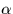
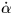
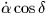

Mean and rate of change are not sufficient to pin down a star; the epoch at which the was or will be correct is also needed. Note the distinction between the epoch which specifies the coordinate system and the epoch at which the star passed through the given . The full specification for a star is , proper motions, equinox and epoch (plus something to identify which set of models for the precession etc. is being used - see the next section). For convenience, coordinates given in star catalogues are almost always adjusted to make the equinox and epoch the same - for example B1950 in the case of the SAO catalogue.
SLALIB provides one routine to handle proper motion on its own, sla_PM. Proper motion is also allowed for in various other routines as appropriate, for example sla_MAP and sla_FK425. Note that in all SLALIB routines which involve proper motion the units are radians per year and the  component is in the form  (i.e. big numbers near the poles). Some star catalogues have proper motion per century, and in some catalogues the component is in the form  (i.e. angle on the sky).
SLALIB --- Positional Astronomy Library